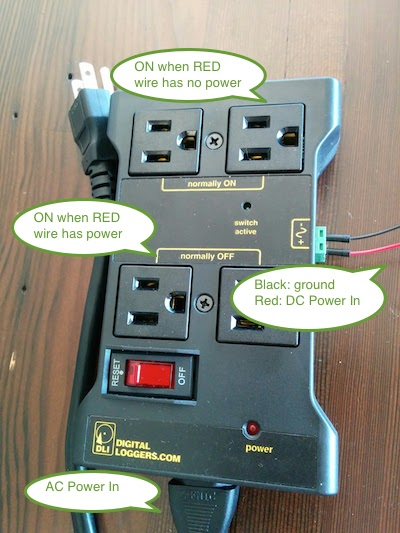
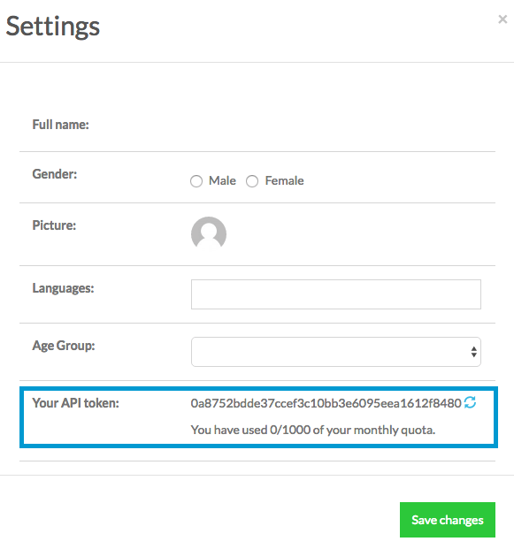
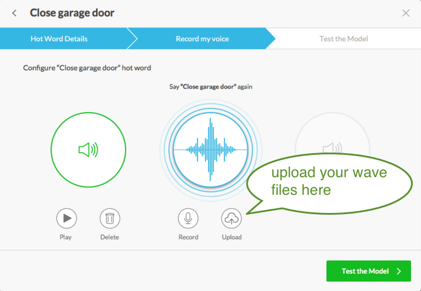

Snowboy, a Customizable Hotword Detection Engine¶
| Contact: | snowboy@kitt.ai |
|---|---|
| Website: | https://snowboy.kitt.ai |
| Github: | https://github.com/kitt-ai/snowboy |
| Version: | 1.1.0 (2016-09-20) |
New!
Snowboy now offers Hotword as a Service. You can programatically use our RESTful API Calls to train a hotword model providing 3 voice samples.
The following is an example with different customized hotwords in both English and Chinese. In the video you first pick a hotword, say it 3 times (indicated by the 3 LED lights), a model is trained on device on the fly, then the device does hotword detection immediately.
Introduction¶
Snowboy is an embedded and real-time, always-listening but off-line, and highly customizable hotword detection engine that runs on Raspberry Pi, (Ubuntu) Linux, and Mac OS X. A hotword is a key word or phrase that a computer always listens for to trigger other actions. A hotword is also called a wake word or trigger word.
Common usage of hotword include Alexa on Amazon Echo, OK Google on some Android devices and Hey Siri on iPhones. These hotwords are used to initiate a full-fledged speech interaction interface. But hotwords can be used in other ways too, such as performing simple command & control actions.
A hacker’s way to perform hotword detection is running full ASR (Automatic Speech Recognition) on device and watching specific trigger words in ASR transcriptions. ASR consumes a lot of device and bandwidth resource and does not protect your privacy if using a cloud-based solution. Snowboy is created by KITT.AI to solve these pains.
Snowboy is:
- highly customizable: you can freely define your own magic phrase here –
let it be “open sesame”, “garage door open”, or “hello dreamhouse”, you name it.
- always listening but protects your privacy: Snowboy does not use Internet
and does not stream your voice anywhere.
- light-weight and embedded: it runs on Raspberry Pi’s and consumes less than 10%
CPU on the weakest Pi’s (single-core 700M Hz ARMv6).
Apache licensed!
Currently Snowboy supports:
- all versions of Raspberry Pi (with Raspbian based on Debian Jessie 8.0)
- 64bit Mac OS X
- 64bit Ubuntu (12.04 and 14.04)
It ships in the form of a C library with Python wrappers. It has limited support for:
- iOS
- Android with ARMv7 CPUs
For iOS/Android, please check out Snowboy’s GitHub page.
If you have it working with more devices, OS, or programming languages, please send a pull request.
Downloads¶
We provide pre-packaged Snowboy binaries and their Python wrappers for:
- 64 bit Ubuntu 12.04 / 14.04
- MacOS X
- Raspberry Pi with Raspbian 8.0, all versions (1/2/3/Zero)
Or you can check out GitHub to compile a version yourself.
Quick Start¶
To use Snowboy, you’ll need:
- a supported device with microphone input
- corresponding decoder (downloaded above)
- trained model(s) from https://snowboy.kitt.ai.
Access Microphone¶
We use PortAudio as a cross-platform support for audio in/out. We also use sox as a quick utility to check whether your microphone setup is correctly.
On Linux systems:
sudo apt-get install python-pyaudio python3-pyaudio sox
On Mac:
brew install portaudio sox
(If you don’t have Homebrew, you can install it here)
Finally install PortAudio’s Python bindings:
pip install pyaudio
Note
If you don’t have pip, you can install it
here
Note
If you have a Permission Error from pip, you can either use sudo pip install pyaudio or change the folder owner to yourself: sudo chown $USER -R /usr/local
To check whether you can record via your microphone, open a terminal and run:
rec temp.wav
If you see an error on Raspberry Pi’s, please refer to the Running_on_Pi section.
Decoder Structures¶
The decoder tarball contains the following files:
├── README.md
├── _snowboydetect.so
├── demo.py
├── demo2.py
├── light.py
├── requirements.txt
├── resources
│ ├── ding.wav
│ ├── dong.wav
│ ├── common.res
│ └── snowboy.umdl
├── snowboydecoder.py
├── snowboydetect.py
└── version
_snowboydetect.so is a dynamically linked library compiled with SWIG. It has
dependencies on your system’s Python2 library. However, all snowboy-related
libraries are statically linked in this file.
snowboydetect.py is a Python wrapper file generated by SWIG. It’s not very
easy to read thus the other high-level wrapper: snowboydecoder.py.
You should already have a trained model file, let’s say snowboy.pmdl. Or simply
use the universal model resources/snowboy.umdl.
Running a Demo¶
(This demo runs on any devices. But we suggest you run it on a laptop/desktop with speaker output because the demo plays a Ding sound when your hotword is triggered.)
The __main__ code of snowboydecoder.py contains a simple demo:
python demo.py snowboy.pmdl
Here snowboy.pmdl is your trained model downloaded from https://snowboy.kitt.ai. The
.pmdl suffix indicates a personal model and a .umdl suffix indicates
a universal model.
Then speak to your microphone and see whether snowboy detects your magic phrase.
The demo is fairly straight-forward:
import snowboydecoder
import sys
import signal
interrupted = False
def signal_handler(signal, frame):
global interrupted
interrupted = True
def interrupt_callback():
global interrupted
return interrupted
if len(sys.argv) == 1:
print("Error: need to specify model name")
print("Usage: python demo.py your.model")
sys.exit(-1)
model = sys.argv[1]
signal.signal(signal.SIGINT, signal_handler)
detector = snowboydecoder.HotwordDetector(model, sensitivity=0.5)
print('Listening... Press Ctrl+C to exit')
detector.start(detected_callback=snowboydecoder.ding_callback,
interrupt_check=interrupt_callback,
sleep_time=0.03)
detector.terminate()
The main program loops at detector.start(). Every sleep_time=0.03
second, the function:
- checks a ring buffer filled with microphone data to see whether a hotword is
detected. If yes, call the
detected_callbackfunction. - calls the
interrupt_checkfunction: if it returns True, then break the main loop and return.
Here we assigned detected_callback with a default
snowboydecoder.ding_callback so that every time your hotword is heard the
computer will play a ding sound.
Note
Do not append () to your callback function: the correct way is to
assign detected_callback=your_func instead of detected_callback=your_func().
However, what if you have parameters to assign in your callback functions?
Use a lambda function! So your callback would look like:
callback=lambda: callback_function(parameters).
Running on Raspberry Pi¶
Raspberry Pi’s are excellent hardware for running Snowboy. We support all versions of Raspberry Pi (1, 2, 3 and Zero). Supported OS is Raspbian 8.0.
Set up Audio¶
You’ll need a USB microphone for audio input. The on-board 3.5mm audio jack only has audio out but no audio in so don’t bother to plug in a microphone there. We have successfully used both generic USB microphones and the PlayStation 3 Eye webcam.
Note
You can buy a PS 3 Eye for $5 on Amazon. Linux has builtin kernel modules for it but Windows PCs do not have free drivers for the Eye.
Please first follow Access_Microphone to install portaudio. Then test whether your microphone can be accessed with rec:
rec t.wav
Note
even though USB webcams should be “plug-n-play”, we experienced that for some of them you have to reboot the Pi after plugging in the webcam.
If you see errors, let’s first check whether your alsa/pulseaudio is configured properly. First list the playback device:
$ aplay -l
**** List of PLAYBACK Hardware Devices ****
card 0: ALSA [bcm2835 ALSA], device 0: bcm2835 ALSA [bcm2835 ALSA]
Subdevices: 8/8
Subdevice #0: subdevice #0
Subdevice #1: subdevice #1
Subdevice #2: subdevice #2
Subdevice #3: subdevice #3
Subdevice #4: subdevice #4
Subdevice #5: subdevice #5
Subdevice #6: subdevice #6
Subdevice #7: subdevice #7
card 0: ALSA [bcm2835 ALSA], device 1: bcm2835 ALSA [bcm2835 IEC958/HDMI]
Subdevices: 1/1
Subdevice #0: subdevice #0
Here the playback device is card 0, device 0, or hw:0,0 (hw:0,1 is HDMI audio out).
Then list your recording device:
$ arecord -l
**** List of CAPTURE Hardware Devices ****
card 1: Camera [Vimicro USB2.0 UVC Camera], device 0: USB Audio [USB Audio]
Subdevices: 1/1
Subdevice #0: subdevice #0
Here the recording device is card 1, device 0, or hw1:0.
Finally change your ~/.asoundrc file to:
pcm.!default {
type asym
playback.pcm {
type plug
slave.pcm "hw:0,0"
}
capture.pcm {
type plug
slave.pcm "hw:1,0"
}
}
And try rec temp.wav again. Your microphone in should be set up properly now.
Now please go back to try Running_a_Demo. If that is successful, let’s try to Blink an LED light and Toggle an AC-powered Lamp with your Pi.
Note
If you see the following error:
ImportError: /usr/lib/arm-linux-gnueabihf/libstdc++.so.6:
version `GLIBCXX_3.4.20' not found (required by rpi-arm-raspbian-8.0-1.0.1/_snowboy.so)
It means that your g++ library is not up-to-date. You are probably still using Debian Wheezy 7.5 (check with lsb_release -a). However we compiled the snowboy library under Raspbian based on Debian Jessie 8.0 that comes with g++-4.9. You can either upgrade your Raspbian version to Jessie, or follow this post to install g++-4.9 on your Wheezy, or compile a version youself from GitHub.
Note
If you cannot hear any audio from the 3.5mm audio jack, it could be that audio is streamed to the HDMI port. Follow this config to make audio output to the 3.5mm audio jack.
Blink an LED light¶
Wire an LED¶
Wiring an LED on Pi’s GPIO ports is very easy: there’s only one place you need to pay attention to: an LED has a shorter leg and a longer leg; the shorter leg is usually connected to ground (GND). The following is a sample wiring:

A few hundred Ohms would be enough for the resistor.
Control an LED with Python¶
We use the RPi.GPIO Python module to control and LED:
import RPi.GPIO as GPIO
import time
class Light(object):
def __init__(self, port):
self.port = port
GPIO.setmode(GPIO.BCM)
GPIO.setup(self.port, GPIO.OUT)
self.on_state = GPIO.HIGH
self.off_state = not self.on_state
def set_on(self):
GPIO.output(self.port, self.on_state)
def set_off(self):
GPIO.output(self.port, self.off_state)
def is_on(self):
return GPIO.input(self.port) == self.on_state
def is_off(self):
return GPIO.input(self.port) == self.off_state
def toggle(self):
if self.is_on():
self.set_off()
else:
self.set_on()
def blink(self, t=0.3):
self.set_off()
self.set_on()
time.sleep(t)
self.set_off()
if __name__ == "__main__":
light = Light(17)
while True:
light.blink()
time.sleep(0.7)
Save the file as light.py, then run:
sudo python light.py
Then the LED light will blink roughly every second.
Blink an LED with Snowboy¶
Now let’s replace Snowboy’s callback function with LED’s blink() function:
import snowboydecoder
import sys
import signal
from light import Light
interrupted = False
def signal_handler(signal, frame):
global interrupted
interrupted = True
def interrupt_callback():
global interrupted
return interrupted
if len(sys.argv) == 1:
print("Error: need to specify model name")
print("Usage: python demo.py your.model")
sys.exit(-1)
model = sys.argv[1]
signal.signal(signal.SIGINT, signal_handler)
detector = snowboydecoder.HotwordDetector(model, sensitivity=0.5)
print('Listening... Press Ctrl+C to exit')
led = Light(17)
detector.start(detected_callback=led.blink,
interrupt_check=interrupt_callback,
sleep_time=0.03)
detector.terminate()
The only place changed is:
led = Light(17)
detector.start(detected_callback=led.blink,
interrupt_check=interrupt_callback,
sleep_time=0.03)
which will blink the LED connected to GPIO pin 17 when your hotword is detected:
sudo python demo.py your.pmdl
Toggle an AC-powered Lamp¶
Controlling an LED light is just a toy example, let’s control some real home appliances! In this example we want to use Raspberry Pi’s GPIO output to connect and disconnect a higher voltage AC circuit.
This can be done with help of a bipolar transistor, but luckily someone already built it from a successful kickstarter campaign: the IoT relay, which can be purchased on Amazon for $15 (as of April 2016).
Mechanism of the IoT Relay is very simple:
- when red wire has high DC voltage (say, 3.3V or 12V), the top two “normally ON”
outlets will turn off and the bottom two “normally OFF” outlets will turn on
- when red wire has no DC voltage, the top two “normally ON”
outlets will turn on and the bottom two “normally OFF” outlets will turn off
- the top two and bottom two outlets can only be controlled in two groups. There
is no way to control each of them individually.
Now if we directly connect the red wire to Pin 17 of a Raspberry Pi and reuse light.py or demo.py above, we can control any home appliances that are plugged into the IoT Relay!
The following is a little video with Snowboy running on a Raspberry Pi controlling three small LED lights on the right and a lamp on the left through the IoT relay:
RESTful API Calls¶
Snowboy provides the following HTTP endpoints for you to train and improve a model without using the website:
/api/v1/train: train a model with 3 .wav files/api/v1/improve: contribute .wav sample files to an existing model, for instance, false alarmed sound
All uploaded .wav files are not visible from the Snowboy library. So your privacy is protected. However, we do not provide an API to retrieve these files either.
/api/v1/train¶
- Endpoint:
https://snowboy.kitt.ai/api/v1/train/ - Type:
POST - Return: a binary personal model, or error
The /api/v1/train endpoint provides an opportunity to:
- programmatically train a model without using the web interface
- achieve better acoustic consistency and less distortions among different microphones, since the training and test voice samples will be collected off the same microphone
Now you can define truly customized hotword for each of your end customer. Just ask them to say the hotword 3 times and a model will be trained on the fly!
| Parameter | Required | Value |
|---|---|---|
| voice_samples | Y | A list of 3 voice samples in .wav format. |
| token | Y | Secret user token |
| name | Y | String, or “unknown” if we don’t know hotword name |
| language | N | ar (Arabic), zh (Chinese), nl (Dutch), en (English), fr (French), dt (German), hi (Hindi), it (Italian), jp (Japanese), ko (Korean), fa (Persian), pl (Polish), pt (Portuguese), ru (Russian), es (Spanish), ot (Other) |
| age_group | N | 0_9, 10_19, 20_29, 30_39, 40_49, 50_59, 60+ |
| gender | N | F/M |
| microphone | N | String, your microphone type |
Return value of /api/v1/train endpoint is a binary .pmdl personal model.
API token can be obtained by logging into https://snowboy.kitt.ai, click on “Profile settings”:
The following is a sample example in Python:
1 2 3 4 5 6 7 8 9 10 11 12 13 14 15 16 17 18 19 20 21 22 23 24 25 26 27 28 29 30 31 32 33 34 35 36 37 38 39 40 41 42 43 44 45 46 47 48 49 50 51 | import sys
import base64
import requests
def get_wave(fname):
with open(fname) as infile:
return base64.b64encode(infile.read())
endpoint = "https://snowboy.kitt.ai/api/v1/train/"
############# MODIFY THE FOLLOWING #############
token = ""
hotword_name = "???"
language = "en"
age_group = "20_29"
gender = "M"
microphone = "macbook microphone"
############### END OF MODIFY ##################
if __name__ == "__main__":
try:
[_, wav1, wav2, wav3, out] = sys.argv
except ValueError:
print "Usage: %s wave_file1 wave_file2 wave_file3 out_model_name" % sys.argv[0]
sys.exit()
data = {
"name": hotword_name,
"language": language,
"age_group": age_group,
"gender": gender,
"microphone": microphone,
"token": token,
"voice_samples": [
{"wave": get_wave(wav1)},
{"wave": get_wave(wav2)},
{"wave": get_wave(wav3)}
]
}
response = requests.post(endpoint, json=data)
if response.ok:
with open(out, "w") as outfile:
outfile.write(response.content)
print "Saved model to '%s'." % out
else:
print "Request failed."
print response.text
|
Save the file as training_service.py. Usage is simple:
python training_service.py 1.wav 2.wav 3.wav saved_model.pmdl
where you can use the rec command to record a .wav file on terminal:
rec -r 16000 -c 1 -b 16 -e signed-integer 1.wav
The following is a sample example in bash with curl:
1 2 3 4 5 6 7 8 9 10 11 12 13 14 15 16 17 18 19 20 21 22 23 24 25 26 27 28 29 30 31 32 33 34 35 36 37 38 39 | #! /usr/bin/env bash
ENDPOINT="https://snowboy.kitt.ai/api/v1/train/"
############# MODIFY THE FOLLOWING #############
TOKEN="??"
NAME="??"
LANGUAGE="en"
AGE_GROUP="20_29"
GENDER="M"
MICROPHONE="PS3 Eye"
############### END OF MODIFY ##################
if [[ "$#" != 4 ]]; then
printf "Usage: %s wave_file1 wave_file2 wave_file3 out_model_name" $0
exit
fi
WAV1=`base64 $1`
WAV2=`base64 $2`
WAV3=`base64 $3`
OUTFILE="$4"
cat <<EOF >data.json
{
"name": "$NAME",
"language": "$LANGUAGE",
"age_group": "$AGE_GROUP",
"token": "$TOKEN",
"gender": "$GENDER",
"microphone": "$MICROPHONE",
"voice_samples": [
{"wave": "$WAV1"},
{"wave": "$WAV2"},
{"wave": "$WAV3"}
]
}
EOF
curl -H "Content-Type: application/json" -X POST -d @data.json $ENDPOINT > $OUTFILE
|
/api/v1/improve¶
- Endpoint:
https://snowboy.kitt.ai/api/v1/improve/ - Type:
POST - Return: 200 OK or errors
The /api/v1/improve service can be used to collect
voice samples for opportunities that in the future we can improve the model.
This is especially useful when you get false alarms for a model and we can
later add these false alarms to negative set of training data.
| Parameter | Required | Value |
|---|---|---|
| voice_samples | Y | A list of up to 3 samples in .wav format. |
| token | Y | Secret user token |
| name | Y | String, or “unknown” if we don’t know hotword name |
| language | N | ar (Arabic), zh (Chinese), nl (Dutch), en (English), fr (French), dt (German), hi (Hindi), it (Italian), jp (Japanese), ko (Korean), fa (Persian), pl (Polish), pt (Portuguese), ru (Russian), es (Spanish), ot (Other) |
| age_group | N | 0_9, 10_19, 20_29, 30_39, 40_49, 50_59, 60+ |
| gender | N | F/M |
| microphone | N | String, your microphone type |
| detection_score | N | Float, decoding score on this voice sample. Helps to roughly identify true positives, false positives and false negatives |
The only difference to the /api/v1/train endpoint is that it includes
an optional detection_score field. You can upload up to three voice samples
in the voice_samples list.
Return value of /api/v1/improve endpoint is just a 200 OK HTTP Response.
Quota and Rate Limit¶
Each user gets 1000 free API calls for each end point every 30 days, and the API endpoint is rate limited at 1 call per second.
If you’d like to purchase more, please contact snowboy@kitt.ai
Advanced Usage¶
Multiple Models and Callbacks¶
So far we have worked with only one model that can dictate a binary state. Isn’t it nice to listen to multiple models at the same time? demo2.py shows how to do it:
import snowboydecoder
import sys
import signal
interrupted = False
def signal_handler(signal, frame):
global interrupted
interrupted = True
def interrupt_callback():
global interrupted
return interrupted
if len(sys.argv) != 3:
print("Error: need to specify 2 model names")
print("Usage: python demo.py 1st.model 2nd.model")
sys.exit(-1)
models = sys.argv[1:]
# capture SIGINT signal, e.g., Ctrl+C
signal.signal(signal.SIGINT, signal_handler)
sensitivity = [0.5]*len(models)
detector = snowboydecoder.HotwordDetector(models, sensitivity=sensitivity)
callbacks = [lambda: snowboydecoder.play_audio_file(snowboydecoder.DETECT_DING),
lambda: snowboydecoder.play_audio_file(snowboydecoder.DETECT_DONG)]
print('Listening... Press Ctrl+C to exit')
# main loop
# make sure you have the same numbers of callbacks and models
detector.start(detected_callback=callbacks,
interrupt_check=interrupt_callback,
sleep_time=0.03)
detector.terminate()
Here we used two models for the decoder and provided two callback functions. If the first hotword is detected, it’ll play a Ding sound. If the second hotword is detected, it’ll play a Dong sound.
You are not limited to using only two models. You are also not limited to using only the personal or the universal models. You can give HotwordDetector a mixture of multiple personal and universal models as long as your CPU is powerful enough to process them all.
FAQ¶
- What’s the CPU/RAM usage?
Snowboy takes minimal CPU on modern computers. On Raspberry Pi’s with decade-old CPU chips, it takes less than 5% ~ 10% of CPU depending on specific chips. In terms of memory usage, the PortAudio Python wrapper usually uses about 10MB of RAM while the standalone C binary uses less than 2MB.
| Name | CPU | CPU Usage | RAM Usage |
|---|---|---|---|
| RPi 1 | single-core 700MHz ARMv6 | <10% |
|
| RPi 2 | quad-core 900MHz ARMv7 | <5% | |
| RPi 3 | quad-core 1.2GHz ARMv8 | <5% | |
| RPi Zero | single-core 1GHz ARMv6 | <5% | |
| Macbooks | Intel Core i3/5/7 | <1% |
- What is detection sensitivity
Detection sensitivity controls how sensitive the detection is. It is a value between 0 and 1. Increasing the sensitivity value lead to better detection rate, but also higher false alarm rate. It is an important parameter that you should play with in your actual application.
- Audio format
Supported audio format is WAVE (with linear PCM, 8-bits unsigned integer, 16-bits signed integer or 32-bits signed integer). The actual audio format to be used is decided by Snowboy. See SampleRate(), NumChannels() and BitsPerSample() for the required sampling rate, number of channels and bits per sample values.
- My pmdl model works well for me, but does not work well for others
Models with suffix pmdl are personal models, and they are supposed to only work well for the person who provides the audio samples. If you are looking for a model that works well for everyone, please use the universal model (with suffix umdl).
- My trained model works well on laptops but not on Pi’s
It’s due to acoustic distortion through microphones. If you record your voice with two different microphones: one on your laptop and the other on your Pi, then play them (play t.wav), you’ll hear they sound very differently, even with the same voice!
The best way around this is to use the same recording for both training your model and testing your voice. If you want to use Snowboy on a Raspberry Pi, you can first record your voice with rec t.wav (make sure to apt-get install sox), then upload the 3 recordings to the Snowboy website, and finally download the trained model. The uploading button is as the following:
Another trick is to play with the audio gain (see the answer regarding
audio_gain below). We have the experience that USB microphones on a
Raspberry Pi usually have low volume, thus increasing the audio gain may help.
- The volume of my recording is too low/high
When you construct a HotwordDetector from snowboydecoder, there is an
audio_gain parameter:
HotwordDetector(decoder_model,
resource=RESOURCE_FILE,
sensitivity=[],
audio_gain=1)
Set audio_gain to be larger than 1 if your test recording’s volume is too low, or smaller
than 1 if too high.
- Does Snowboy come with VAD?
Yes, Snowboy comes with Voice Activity Detection. Usually detecting whether there’s human voice in the audio needs much less resource than detecting a hotword. Thus VAD serves as a filtering layer before hotword detection to reduce CPU usage.
- How to use Snowboy’s VAD to detect voice and silence?
The return value of SnowboyDetect.RunDetection() function indicates silence,
voice, error, and triggered words:
| return | meaning |
|---|---|
| -2 | silence |
| -1 | error |
| 0 | voice |
| 1,.. | triggered index |
Check out snowboydecoder.py for usages.
- Who wrote Snowboy?
The KITT.AI co-founders. Core modules of Snowboy are created by Guoguo Chen, who is also a contributor to the open-source speech recognition software Kaldi and general purpose neural network toolkit CNTK.